Facilitates subframe evaluation, selection and weighting based on several subframe quality related measurements. [more]
Keywords: subframe evaluation, subframe selection, subframe weighting, star detection, star fitting, star profile full width at half maximum, FWHM, star profile eccentricity, subframe signal to noise ratio weight
[hide]
[hide]
The SubframeSelector script facilitates subframe evaluation, selection and weighting based on several subframe quality related measurements, including estimates of star profile full width at half maximum (FWHM), star profile eccentricity and subframe signal to noise ratio weight.
SubframeSelector provides the following functions:
SubframeSelector relies on the PixInsight StarAlignment process for star detection, the PixInsight DynamicPSF process for star fitting, and PixInsight's multiresolution support noise estimation capabilites[1]. The script employs custom algorithms for data reduction and presentation. The subframe selection and weighting facilities rely on a custom subframe expression parser and interpreter.
In the Target Subframes section, add all target subframes. Subframes may be raw, calibrated or registered, but all should be the same type, have their overscan regions (if any) applied and cropped, be compatible for registration (if unregistered) and be compatible for integration. Measurements are typically most accurate on calibrated but unregistered subframes.
All subframes should be observations of the same target. Small variations in targeting are acceptable, such as those due to dithering and meridian flipping. Larger variations in targeting will result in incomparable property measurements.
Add at most several hundred subframes. Adding more than that may result in poor performance of the script.
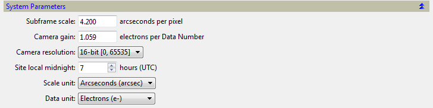Set the parameters in the System Parameters section.
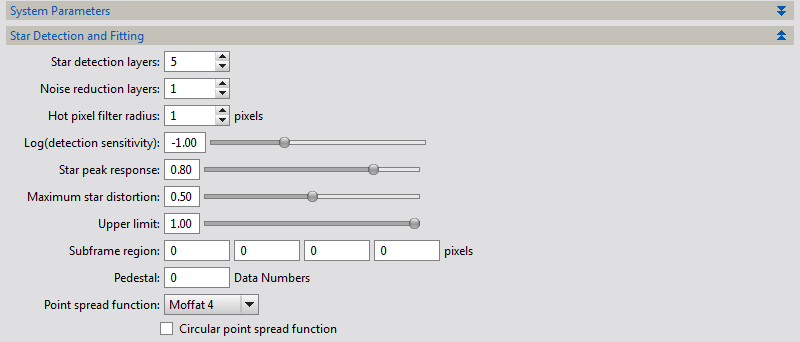Adjust the Star Detection and Fitting section parameters if necessary so that between several hundred and several thousand stars are detected and fitted per subframe. The number of stars detected and fitted per subframe is provided by the StarSupport property once the measurement process has completed. A map of detected and fitted stars in each subframe may also be generated by clicking the Output Maps button.
Select a Point spread function (PSF). The PSF functions are defined in the DynamicPSF process documentation. Star images will be fit to the selected PSF model. The quality of the fit on each subframe is provided by the StarResidual and StarResidualMeanDev properties once the measurement process has completed. A map of residuals for each fitted star in each subframe may also be generated by clicking the Output Maps button.
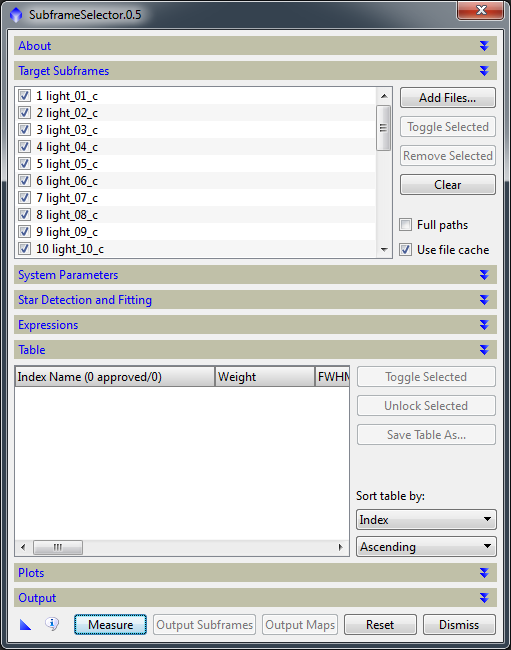Click the Measure button. Review the measurements presented in the table and the plots.
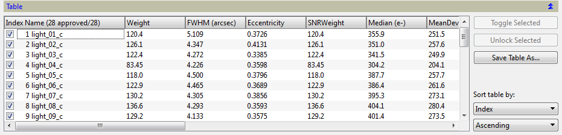The table contains one row per subframe with the subframe's Index and file name listed in the first column and its subframe properties listed in the remaining columns. The table may be sorted by column by selecting a table sort column and a table sort ordering.
The table may be saved as a comma separated value .csv file for postprocessing by clicking the Save Table As button.
The most important properties measured by SubframeSelector are FWHM, Eccentricity, SNRWeight, Median, MeanDeviation and Noise. The remaining properties StarSupport, StarResidual, NoiseSupport, FWHMMeanDev, EccentricityMeanDev and StarResidualMeanDev provide supporting information of secondary importance.
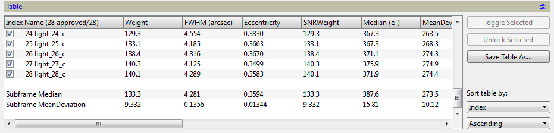The last two rows of the table display the medians and mean deviations of the subframe properties across all subframes. Mean deviation is the mean absolute deviation from the median of the property.
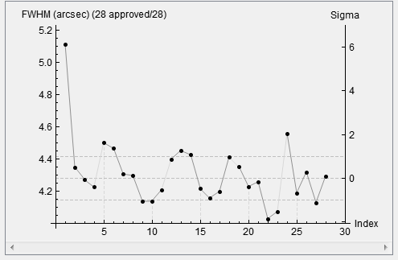 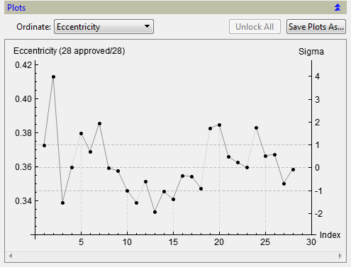 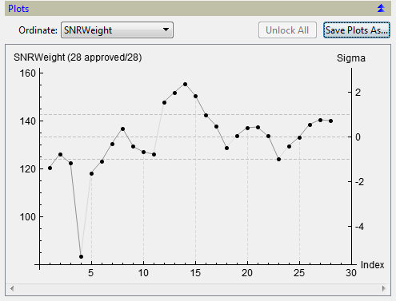Select a plot ordinate from the Ordinate list to view a plot of the selected subframe property. The plot's abscissa represents subframes identified by their Index property whose value equals the index of the subframe in the Target Subframes list. The plot's left hand ordinate axis is labeled in units selected either in the System Parameters section or in the ordinate's natural units. The plot's right hand ordinate axis is labeled in normalized sigma units. Sigma values are normalized in mean absolute deviation units from the median of the property across all subframes.
The central horizontal dashed line corresponds to the median of the property across all subframes. The two horizontal dashed lines above and below the median line correspond to one mean absolute deviation unit greater than and less than the median, respectively.
The vertical dashed lines are visual aids to help associate subframes with their points. The points corresponding to adjacent subframes in index order whose observations occurred during the same night as specified by the Site local midnight parameter and the FITS keyword DATE-OBS are joined with darker lines. Lighter lines connect adjacent points of subframes whose observations occurred on different or unknown nights. In the example the observations were made across five nights.
A set of plots for all properties may be saved as a multiple image FITS file for archival by clicking the Save Plots As button.
The SubframeSelector script includes a subframe approval facility, with the option of copying/moving all approved/rejected subframes to output directories for postprocessing. Choosing a subset of subframes that meet certain quaility requirements for integration is an example usage of this facility.
A subframe may be approved or rejected by any of the following four ways:
An approved subframe is indicated by a checked checkbox in the table and a dot shaped point in the plot. A rejected subframe is indicated by an unchecked checkbox in the table and a cross shaped point in the plot. The row of a rejected subframe in the table is also drawn with a gray background.
A subframe approved or rejected by one of the first three ways listed above will also be locked. The subframe approval expression will not modify the approved/rejected state of locked subframes. This locking mechanism provides a convienient way to override subframe approval expression dispositions. A locked subframe is indicated with a bar icon to the right of its checkbox in the table and by a bar icon above its point in the plot. A locked subframe may be unlocked by any of these three ways:
Examples of subframe approval and rejection are shown below.
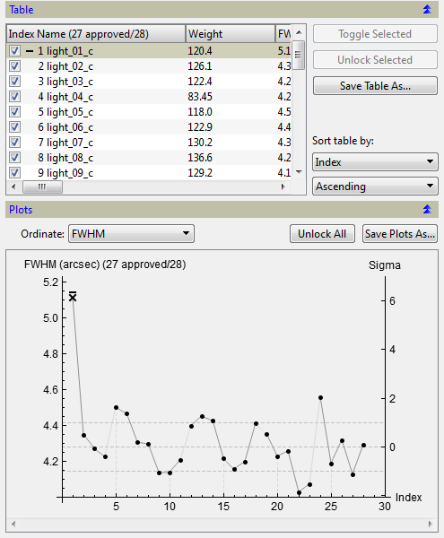In the plot above note that the FWHM of the first subframe is relatively high. This high FWHM was due to focus drift during the observation as a result of a large change in ambient air temperature. The subframe can be rejected by clicking either its checkbox in the table or its point in the plot. The rejection is indicated by an unchecked checkbox and a cross shaped point. The subframe is also locked by this action. This lock is indicated by the bar icons.
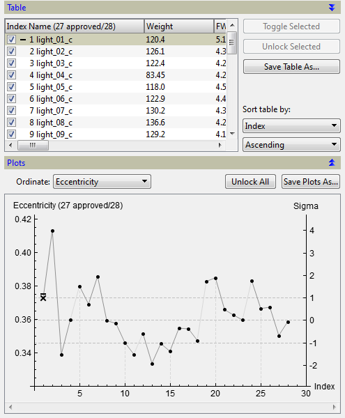In the plot above note that all subframe Eccentricity values are less than 0.42, the threshold of visible star distortion for most people. No additional subframes are rejected due to distortion. Note that the previously rejected subframe remains rejected.
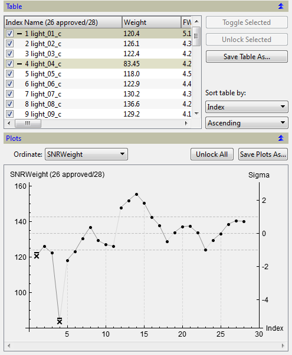In the plot above note that the SNRWeight of the fourth subframe is relatively low. This low SNRWeight was due to the presense of high clouds during the observation, resulting in a relatively low signal to noise ratio. The subframe can be rejected by clicking either its checkbox in the table or its point in the plot. Note that the previously rejected subframe remains rejected.
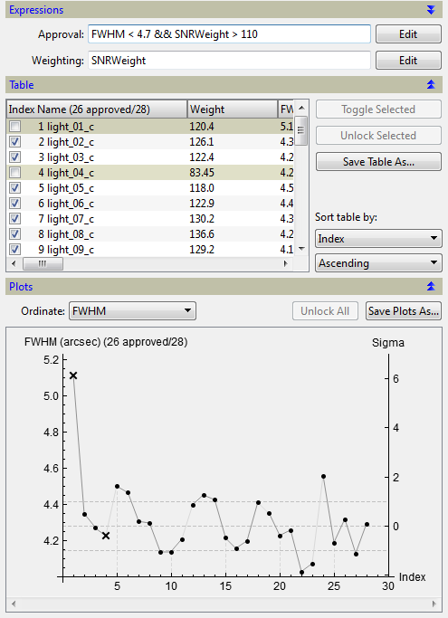In the plot above the subframe locks from the previous rejections were first released by clicking the Unlock All button and then the expression FWHM < 4.7 && SNRWeight > 110 was entered as a subframe approval expression. This expression states that an approved subframe must have a FWHM less than 4.7 and a SNRWeight greater than 110. All subframes not satisfying this requirement are rejected. Note that all subframes remain unlocked.
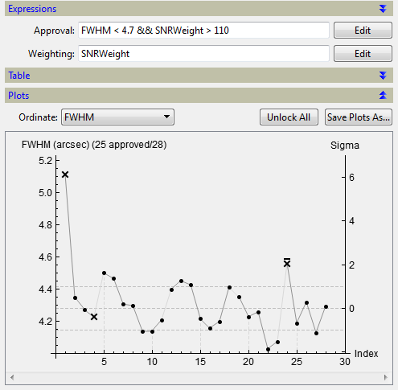In the plot above the subframe with index 24 was rejected by clicking its point in the plot. It is locked to prevent the subframe approval expression from overriding this disposition. Subframes 1 and 4 remain rejected by the subframe approval expression. In this example note that a subframe otherwise approved by the subframe approval expression was rejected by clicking its point. The converse is also possible, a subframe otherwise rejected by the subframe approval expression can be approved by clicking its point.
Subframe locks may be removed at any time as described above. Once a lock is removed, a subframe's disposition will be determined by the subframe approval expression.
Once subframe approval/rejection descisions have been completed, the approved/rejected subframes may be optionally copied/moved to output directories for postprocessing. See the section Output Subframes for details.
The SubframeSelector script includes a subframe weighting facility, with the option of recording subframe weights in FITS headers for postprocessing. Assigning integration weights to subframes is an example usage of this facility. Another example is the determination of the "best" subframe for use as a registration reference.
Subframe weights are assigned by specifying a subframe weighting expression. This expression is an arithmetic combination of a subframe properties whose value is interpreted as a subframe's weight.
Examples of subframe weighting are shown below.
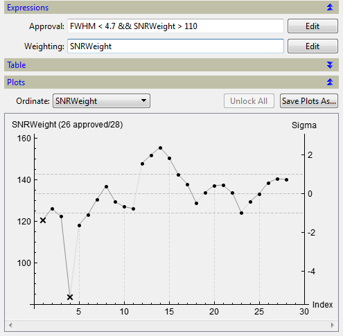In the example above a subframe's weight equals the value of its SNRWeight property. SNRWeight is an unnormalized approximation of the current NoiseEvaluation weight used by the ImageIntegration process. See the definition of the SNRWeight property for more information.
SNRWeight weights are typically assigned to calibrated but unregistered subframes. These weights are carried through the StarAlignment registration process in the FITS headers and used by ImageIntegration for weighting purposes.
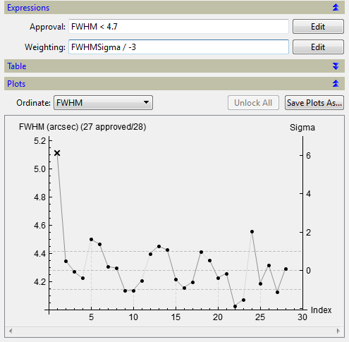The goal of this example is to develop a subframe weighting that combines aspects of both FWHM and SNRWeight. In other words we want to find subframes that have both low FWHM and high SNRWeight. The best of these subframes might be used as a registration reference for the StarAlignment process, for example.
The approach taken here to develop such a weight is to combine sigma normalized property values. Appending the suffix Sigma to a property name provides the property's value normalized in its sigma units. This value is scaled by the factor -3 in this example and used as the weighting expression. The absolute value 3 is choosen because it roughly equals the sigma value corresponding to the rejection threshold of 4.7 arcseconds. A negative value is choosen because larger FWHM values correspond to smaller weights.
As a result, subframes whose FWHM value equals the median are assigned weight 0, subframes with FWHM smaller than the median are assigned positive weights, and subframes with FWHM larger than the median are assigned negative weights. Furthermore, a subframe with a FWHM three sigmas larger than the median (the rejection threshold) is assigned weight -1.
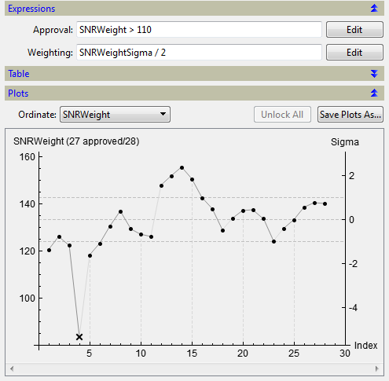Next the same process is applied to SNRWeight, noting that the rejection threshold of 110 corresponds to a sigma value of roughly -2. Here positive 2 is used as a normalization factor since unlike FWHM larger SNRWeight values correspond to better subframes. As a rule of thumb for this weighting scheme, a property's normalizing factor in the weighting expression equals the negative of its rejection threshold in sigma units.
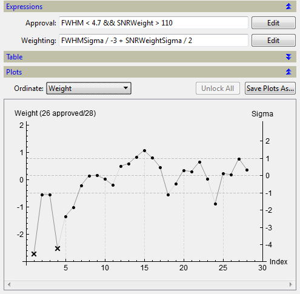Finally, the two scaled, sigma normalized property values are combined by summation and used as a weighting expression. The results are viewed by choosing the plot ordinate Weight. Note as a sanity check that the two rejected subframes have lowest weight as expected. Note also that subframe 15 has the highest weight, it has the best weighted combination of FWHM and SNRWeight values given property statistics and the normalization factors. Of course, different normalization factors may be choosen to modify the relative significance of FWHM and SNRWeight in the combination.
Clearly a weighting scheme such as this is subjective in nature. The assigned weights depend on the underlying subframe property statistics as well as the choice of normalization factors. However, there may be no "proper" way to combine disparate measures like FWHM, SNRWeight and other subframe properties. Judgement is required given the intended use of the weights and the relative importance of subframe properties with respect to that use.
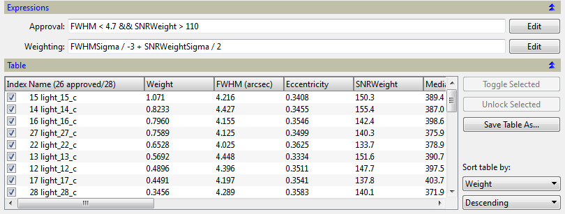The table above is sorted by Weight in descending order. Note that subframe 22, the one with the smallest FWHM, is located lower in the list due to its relatively smaller SNRWeight. Similarily for subframe 14, the one with largest SNRWeight. Subframe 15 has the best combination of FWHM and SNRWeight values and is rated highest by this particular weighting.
Once subframes have been approved or rejected, and optionally subframe weights applied, the approved and/or rejected subframes may be copied and/or moved to output directories by clicking the Output Subframes button. Output directories for approved and rejected subframes may be specified in the Approved directory and Rejected directory fields, respectively. If a directory field is left blank, the associated subframes will be written to the same directories as their corresponding target files. The action fields specify the file operation performed for approved and rejected subframes, either copy, move or none. The postfix fields specify postfixes that will be appended to the file name of each copied or moved subframe. To record subframe weights in the FITS headers of the copies specify a FITS keyword in the Weight keyword field. Note that weights may be recorded in copied subframes but not in moved subframes.
Star maps for all subframes, both approved and rejected, may be output by clicking the Output Maps button. A star map for a subframe consists of two files, a multi image FITS file and a comma separated value .csv file.
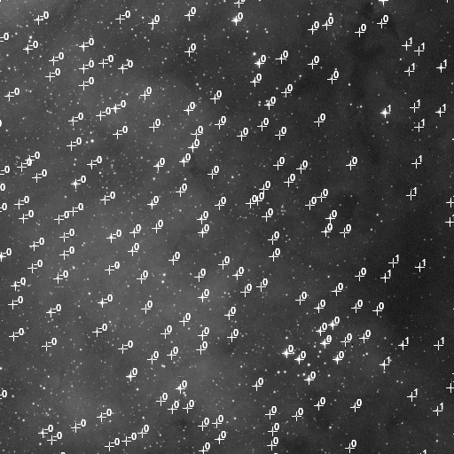 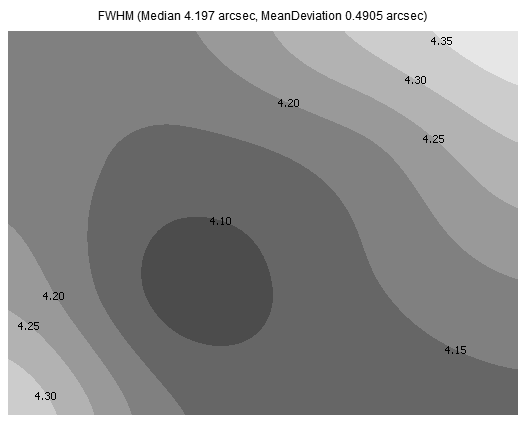 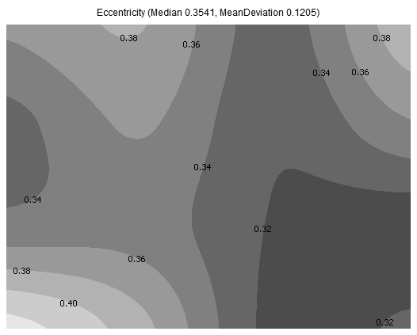The first image in the star map multi image FITS file is a map of the positions of the fitted stars in the subframe along with their sigma normalized and integer rounded fitting residuals. The sigma normalization is computed relative to the values of the subframe's StarResidual and StarResidualMeanDev properites.
The second image shows the spatial variation of star profile FWHM across the subframe.
The third shows the spatial variation of star profile Eccentricity across the subframe.
The comma separated value value .csv file contains PSF model specific fitting parameters for each fitted star. See the documentation of the DynamicPSF process for more information.
SubframeSelector provides values of the following properties for each measured subframe.
The index number of the subframe in the Target subframes list.
The weight of the subframe as determined by the subframe weighting expression.
The median star profile full width at half maximum (FWHM) estimate for the subframe in arcseconds or pixels. The FWHM is a well-known and standardized measurement of the size of a star as seen on the subframe. It is the width normalized in arcseconds or pixels of a functional fit to a star image, measured horizontally at half its maximum value.
The median star profile eccentricity estimate for the subframe. Eccentricity is a measure of star profile distortion. Given an elliptical star profile with major axis diameter a and minor axis diameter b where a is greater than or equal to b, the star profile eccentricity equals (1 - b2 / a2)0.5, the star profile aspect ratio equals b / a and the star profile flatness equals a / b - 1. A distortion with an eccentricity less than about 0.42 is not perceptible to most people. The table below shows the relationship between these measures.
The signal to noise ratio weight estimate for the subframe. SNRWeight equals MeanDeviation2 / Noise2. SNRWeight is unnormalized approximation to the current NoiseEvaluation weight used by the ImageIntegration process when configured to use the average absolute deviation from the median as a scale estimator. In a subframe integration, the ratio between a subframe's SNRWeight and the reference subframe's SNRWeight approximately equals the NoiseEvaluation weight of the subframe.
The significance of the unnormalized SNRWeight and the normalized NoiseEvaluation weight is that a weighted subframe integration using these weights is an approximate maximum likelyhood estimator for pixel values that correspond to background limited targets, without requiring additional information such as exposure times or sensor parameters. See the ImageIntegration documentation for more information.
Note that SNRWeight and NoiseEvaluation weight are relative and not absolute measures of signal to noise ratio. Their formulation assumes that the subframes represent observations of the same target with the same filter and that the subframes have similar background gradients.
Frames with higher numbers are better, eg., less camera noise, less light pollution and sky background, more transparent skies and less atmospheric extinction, more exposure time, etc.
Note SNRWeight is not foolproof. You still should blink your frames. Strongly differing gradients, bright star halos from high thin clouds, etc, can result in bogus SNRWeight values.
The median of the subframe in electrons or Data Numbers.
The mean absolute deviation from the median of the subframe in electrons or Data Numbers.
An estimate of the standard deviation of Gaussian noise for the subframe in electrons or Data Numbers. Noise is currently determined by a wavelet-based multiscale algorithm[1].
The number of stars detected and fitted in the subframe and used to estimate FWHM, Eccentricity, FWHMMeanDev and EccentricityMeanDev.
StarSupport may sometimes be used as a measure of subframe quality, as worse observing conditions such as clouds, less exposure time, etc, will result in fewer detectable stars. Note however that for undersampled subframes, stars are tiny and the dimmest usually will be rejected as hot pixels. Better focus, better seeing, and better tracking will result in even smaller stars, higher hot pixel rejection, and smaller StarSupport values. So a smaller StarSupport may indicate a better subframe.
The median residual of the star fitting process for the subframe. Residuals are currently measured as the mean absolute deviation between the fitted PSF model and the star image data in normalized units.
The fractional number of pixels in the subframe deemed free of image structure and used to estimate Noise.
The mean absolute deviation from the median star profile full width at half maximum (FWHM) estimate for the subframe in arcseconds or pixels.
The mean absolute deviation from the median star profile eccentricity estimate for the subframe.
The mean absolute deviation from the median residual of the star fitting process for the subframe.
Date
The observation date and Coordinated Universal Time (UTC) of the subframe, as provided by the value of the FITS keyword DATE-OBS (if available).
SubframeSelector provides a subframe expression parser and interpreter as an aid for subframe approval and weighting. A simple metalanguage will be used to describe subframe expression syntax rules and syntactical elements. Italicized san-serif text is used by the metalanguage to denote metasymbols, which represent expression elements in formal terms. The following metanotations are defined on metaelements.
The metanotation [ a ] denotes either zero or one repetition of the metaelement a.
The metanotation [ a ]... denotes zero, one or more repetitions of the metaelement a.
The metanotation [ a | b | ... | z ] denotes exactly one of the metaelements a, b, ..., or z.
Subframe approval expressions specify constraints on subframe properties. Subframes with properties that satisfy a subframe approval expression are considered approved by that expression. Subframes that do not satisfy a subframe selector expression are considered rejected by that expression. All subframes satisfy a blank (empty) subframe approval expression.
Subframe approval expressions consist of boolean combinations of constraints on weighting expressions. Weighting expressions consist of arithmetic combinations of subframe properties.
The following metalanguage defines subframe approval expression syntax rules and syntactical elements.
The binary operators && and || denote logical-and and logical-or, respectively. The unary operator ! denotes logical-not. The binary operators <, >, <=, >=, == and != denote less-than, greater-than, less-than-or-equal, greater-than-or-equal, equal and not-equal, respectively. The binary operators +, -, *, / and ^ denote addition, subtraction, multiplication, division and exponentiation, respectively. The unary operator - denotes negation.
Property values are defined in units either specified in the Subframe Properties section or in natural units. Properties whose name ends in Sigma provide property values normalized in mean absolute deviation units from the median of the property.
approval = [ constraint [ [ && | || ] constraint ]... ]
constraint = [ weighting [ < | > | <= | >= | == | != ] weighting | true | false | [ ! ] (approval) ]
weighting = term [ [ + | - | * | / | ^ ] term ]...
term = [ - ] [ number | property | (weighting) ]
property = [ Index | Weight | WeightSigma | FWHM | FWHMSigma | Eccentricity | EccentricitySigma | SNRWeight | SNRWeightSigma | Median | MedianSigma | MeanDeviation | MeanDeviationSigma | Noise | NoiseSigma | StarSupport | StarSupportSigma | StarResidual | StarResidualSigma | NoiseSupport | NoiseSupportSigma | FWHMMeanDev | FWHMMeanDevSigma | EccentricityMeanDev | EccentricityMeanDevSigma | StarResidualMeanDev | StarResidualMeanDevSigma ]
The value of a subframe's Weight property is specified by a subframe weighting expression. A blank (empty) subframe weighting expression assigns a zero weight.
Weighting expressions consist of arithmetic combinations of subframe properties.
The following metalanguage defines subframe weighting expression syntax rules and syntactical elements.
The binary operators +, -, *, / and ^ denote addition, subtraction, multiplication, division and exponentiation, respectively. The unary operator - denotes negation.
Property values are defined in units either specified in the Subframe Properties section or in natural units. Properties whose name ends in Sigma provide property values normalized in mean absolute deviation units from the median of the property.
weighting = [ term [ [ + | - | * | / | ^ ] term ]... ]
term = [ - ] [ number | property | (weighting) ]
property = [ Index | FWHM | FWHMSigma | Eccentricity | EccentricitySigma | SNRWeight | SNRWeightSigma | Median | MedianSigma | MeanDeviation | MeanDeviationSigma | Noise | NoiseSigma | StarSupport | StarSupportSigma | StarResidual | StarResidualSigma | NoiseSupport | NoiseSupportSigma | FWHMMeanDev | FWHMMeanDevSigma | EccentricityMeanDev | EccentricityMeanDevSigma | StarResidualMeanDev | StarResidualMeanDevSigma ]
[hide]
Use these controls to define and manage a list of subframes to be processed by SubframeSelector.
This control is a list with all the subframes currently selected for measurement. The list will show full file paths or just file names, depending on the state of the Full paths checkbox. On this list you can:
Add Files...
Click this button to open a file dialog where you can select existing subframe files, which will be appended to the current list of target subframes.
Toggle Selected
Click to toggle the checked/unchecked state of the current selection in the list of target subframes. Unchecked target subframes will be ignored during the measurement and output processes of SubframeSelector.
Remove Selected
Click to remove current selection from the list of target subframes.
Clear
Click to clear the list of target subframes.
When this option is selected, the list of target subframes will show the full absolute file paths of the target subframes. When this option is not selected, only file names will be shown and full file paths are shown as tool tip messages.
Use file cache
Enable to use a file cache. This cache usually improves performance when the same subframes are measured more than once.
Note that the output star maps process does not use the file cache. Additional subframe measurements may be required to complete this process.
This section provides access to parameters that specify subframe, camera, observation site, presentation units and pedestal information.
Subframe scale
This parameter specifies target subframe scale in arcseconds per pixel. All target subframes must share the same subframe scale value.
SubframeSelector will represent FWHM and FWHMMeanDev properties in either arcseconds or pixels depending on the value of the Scale unit parameter.
This parameter specifies camera gain in electrons per Data Number. All target subframes must share the same camera gain value.
By using the values of this parameter and Camera resolution, SubframeSelector will represent all Median, MeanDeviation and Noise property values in either electrons or Data Numbers depending on the value of the Data unit parameter.
This parameter specifies camera resolution in bits per pixel. All target subframes must share the same camera resolution value.
By using the values of this parameter and Camera gain, SubframeSelector will represent all Median, MeanDeviation and Noise property values in either electrons or Data Numbers depending on the value of the Data unit parameter.
This parameters specifies the Coordinated Universal Time (UTC) of local midnight at the site of target subframe observation, rounded to the nearest hour from 0 to 23. If this time is unknown or varies by more than six hours for the target subframes, set this parameter to 24.
SubframeSelector uses this parameter and the value of the FITS keyword DATE-OBS (if available) to identify adjacent sequences of subframes in the Target subframes list whose observations occurred during the same night.
This parameter specifies the camera pixel scale unit used for measurement presentation. Options are arcseconds and pixels.
This parameter specifies the camera pixel data unit used for measurement presentation. Options are electrons and Data Numbers.
This section provides access to parameters that control the star detection and fitting processes of SubframeSelector.
The star detection parameters should be tuned to detect between several hundred and several thousand stars per subframe. In most cases fewer than several hundred detected stars may risk compromising the accuracy of the measured statistics and more than several thousand detected stars wastes computation time and memory without any additional improvement in accuracy. The number of stars detected and fitted per subframe is provided by the StarSupport property once the measurement process has completed. A map of detected and fitted stars and their residuals in each subframe may also be generated by clicking the Output Maps button.
Star detection layers
This parameter specifies the number of wavelet layers used for star detection.
Noise reduction layers
This parameter specifies the number of wavelet layers used for noise reduction. Noise reduction prevents detection of bright noise structures as false stars, including hot pixels and cosmic rays.
This parameter can also be used to control the sizes of the smallest detected stars (increase to exclude more stars).
Hot pixel filter radius
This parameter specifies the radius in pixels of median filter applied before star detection to remove hot pixels.
To disable hot pixel removal, set this parameter to zero.
Log(detection sensitivity)
This parameter specifies the logarithm of the star detection sensitivity. The sensitivity of the star detection algorithm is measured with respect to the local background of each detected star. Given a star with estimated brightness s and local background b, sensitivity is the minimum value of (s - b) / b necessary to trigger star detection.
Decrease this parameter to favor detection of fainter stars or stars on brighter backgrounds. Increase it to restrict detection to brighter stars or stars on dimmer backgrounds.
Star peak response
This parameter specifies star peak response. If you decrease this parameter, stars will need to have more prominent peaks to be detected by the star detection algorithm. By increasing this parameter, the star detection algorithm will be more permissive with relatively flat stars.
Maximum star distortion
This parameter specifies maximum star distortion. Star distortion is the fractional area of the star's bounding box covered by the star. The distortion of a perfectly circular star is about 0.75 (actually, π/4). Decrease this parameter to detect stars with larger elongation.
Upper limit
Stars with peak values larger than this value won't be measured. This feature may be used to avoid the measurement of saturated and bloomed stars. To disable this feature, set this parameter to one. To disable star detection entirely, set this parameter to zero.
Subframe region
This parameter defines a rectangular region of each target subframe that will be measured. The successive values specify the left, top, width and height of the region. To measure the entire area of each subframe set all four values to zero.
Both the width and height of the region must be at least 256 pixels. Regions smaller than this will be ignored and the entire area of each subframe will be measured.
Pedestal
This parameters specifies a (usually small) quantity that is subtracted from each target subframe prior to the measurement process.
This parameter specifies the point spread function (PSF) used to fit star images. SubframeSelector can fit circular or elliptical Gaussian functions, Moffat [2] functions with a selected β parameter, and Lorentzian functions. These functions have been selected because their shapes make them particularly suitable to model stellar objects represented on most deep-sky images. The PSF functions are defined in the DynamicPSF process documentation.
Note that FWHM and eccentricity measurements for Gaussian, Moffat and Lorentzian functions are in general not compatible and should not be mutually compared. Also avoid comparing FWHM and eccentricity measurements with results obtained in other applications. Each application implements different methods in different ways and the results are in general not compatible.
Circular point spread function
Enable this option to fit circular point spread functions. Disable it to fit elliptical functions.
Circular functions can provide more robust and useful results in cases of strong undersampling or high noise levels.
Approval
This parameter specifies the subframe approval expression, a constraint on subframe properties used to approve and reject subframes.
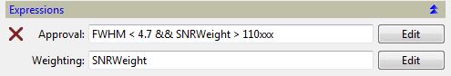A cross icon to the left of the subframe approval expression indicates that the expression is invalid and that all unlocked subframes will be approved. In this example the insertion of the text xxx causes the expression to be invalid.
Approval Edit
Click this button to edit the subframe approval expression. The following dialog will be presented.
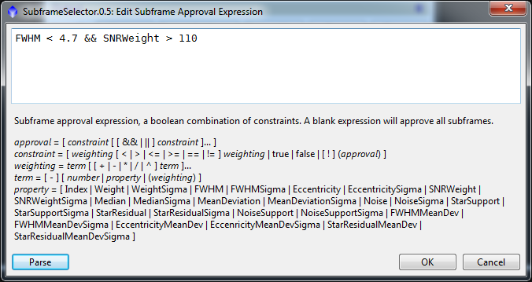Parse
Click this button to parse the subframe selector expression. If the expression is invalid, an alert will be displayed with diagnostic information.
OK
Click this button to accept the edit.
Cancel
Click this button to cancel the edit.
Weighting
This parameter specifies the subframe weighting expression, an arithmetic combination of subframe properties used to assign subframe weights.
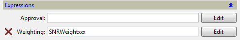A cross icon to the left of the subframe weighting expression indicates that the expression is invalid and that zero will be used as a substitute weight. In this example the insertion of the text xxx causes the expression to be invalid.
Weighting Edit
Click this button to edit the subframe weighting expression. The following dialog will be presented.
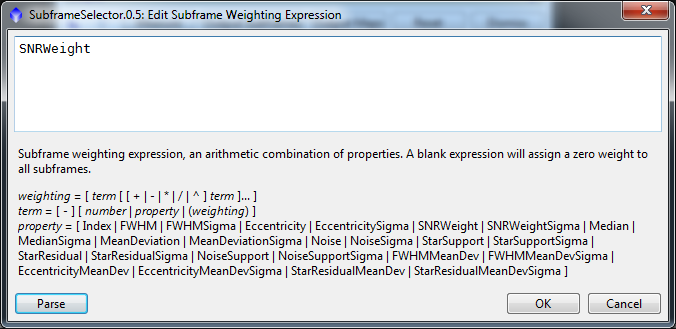Parse
Click this button to parse the subframe weighting expression. If the expression is invalid, an alert will be displayed with diagnostic information.
OK
Click this button to accept the edit.
Cancel
Click this button to cancel the edit.
Subframes table
The table contains one row per subframe with the subframe's Index and file name listed in the first column and its subframe properties listed in the remaining columns. The table may be sorted by column by selecting a table sort column and a table sort ordering.
The last two rows of the table display the medians and mean deviations of the subframe properties across all subframes. Mean deviation is the mean absolute deviation from the median of the property.
On this table you can:
Toggle the approved/rejected state of the currently selected subframes. The toggled subframes will also be locked.
Rejected subframes will be ignored during the output subframes process of SubframeSelector. The subframe approval expression will not modify the approved/rejected state of locked subframes.
Click this button unlock the currently selected subframes.
Click this button to save the table as a comma separated value .csv file for postprocessing.
This parameter specifies a table sort column.
This parameter specifies a table sort ordering.
Plot
The plot displays values of the selected plot ordinate. On the plot you can:
This parameter specifies the plot ordinate.
Click this button to unlock all locked subframes.
Click this button to save all plots in a multiple image FITS file.
Approved action
This parameter specifies the action applied to approved subframes by the Output Subframes button.
Copy
Approved subframes will be copied.
Move
Approved subframes will be moved.
None
No action will be applied to approved subframes.
This is the directory where all approved subframes will be copied or moved.
If this field is left blank, approved subframes will be copied or moved to the same directories as their corresponding target files.
Approved postfix
This is a postfix that will be appended to the file name of each copied or moved approved subframe.
Rejected action
This parameter specifies the action applied to rejected subframes by the Output Subframes button.
Copy
Rejected subframes will be copied.
Move
Rejected subframes will be moved.
None
No action will be applied to rejected subframes.
This is the directory where all rejected subframes will be copied or moved.
If this field is left blank, rejected subframes will be copied or moved to the same directories as their corresponding target files.
Rejected postfix
This is a postfix that will be appended to the file name of each copied or moved rejected subframe.
Star map directory
This is the directory where all subframe star map files will be written.
If this field is left blank, subframe star maps will be written to the same directories as their corresponding target files.
Star map postfix
This is a postfix that will be appended to the file name of each subfame star map.
This is the custom FITS keyword used to record subframe weights in copied subframes. Weights will not be recorded in moved subframes.
If this field is left blank, subframe weights will not be recorded.
Overwrite existing files
If this option is enabled the script will overwrite existing files with the same names as generated output files. This can be dangerous because the original contents of the overwritten files will be lost.
Warning: Use this option at your own risk.
On error
This parameter specifies what to do if there are errors during the measurement and output processes of SubframeSelector.
Continue
The process will continue with the next target subframe, if there is one.
Abort
The process will be aborted immediately after an error condition.
Ask user
A dialog box will be shown where you'll have to specify whether to continue or to abort the process.
Click this button to copy/move approved/rejected subframes to output directories. See the Output section for information on file copy/move actions, output directories and file naming.
Click this button to output star maps for all subframes to an output directory. See the Output section for information on output directory and file naming.
A star map for a subframe consists of two files, a multi image FITs file and a comma separated value .csv file.
The first image in the star map multi image FITS file is a map of the positions of the fitted stars in the subframe along with their sigma normalized and integer rounded fitting residuals. The sigma normalization is computed relative to the values of the subframe's StarResidual and StarResidualMeanDev properites.
The second image shows the spatial variation of star profile FWHM across the subframe.
The third shows the spatial variation of star profile Eccentricity across the subframe.
The comma separated value value .csv file contains PSF model specific fitting parameters for each fitted star. See the documentation of the DynamicPSF process for more information.
Click this button to reset all parameters to their default values.
Click this button to dismiss the script's dialog.
[1] Jean-Luc Starck and Fionn Murtagh, Automatic Noise Estimation from the Multiresolution Support, Publications of the Royal Astronomical Society of the Pacific, vol. 110, February 1998, pp. 193-199
[2] Moffat, A. F. J., A Theoretical Investigation of Focal Stellar Images in the Photographic Emulsion and Application to Photographic Photometry, Astronomy and Astrophysics, Vol. 3, p. 455 (1969)
Copyright © 2012-2016 Mike Schuster. All Rights Reserved.